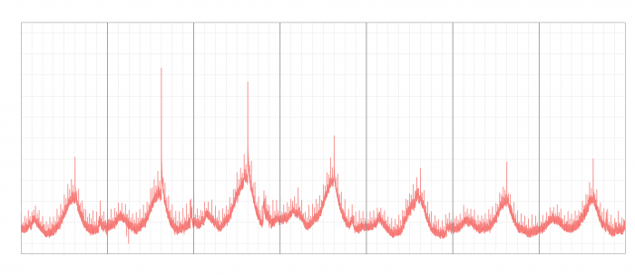
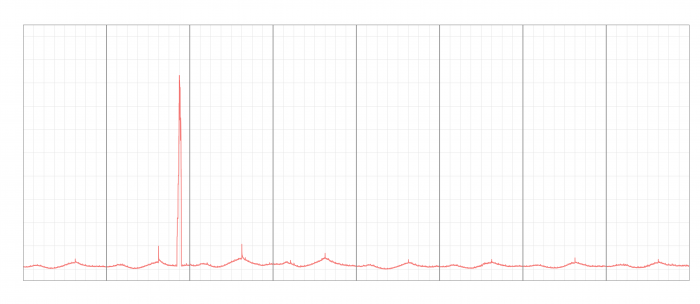
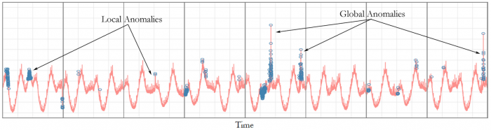
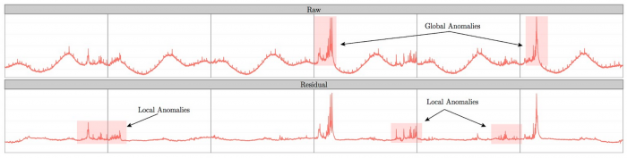
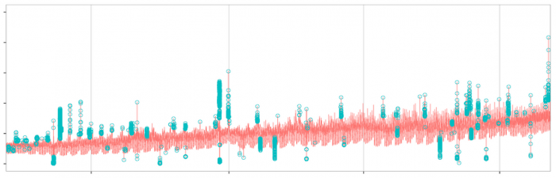

Introducing practical and robust anomaly detection in a time series
Both last year and this year, we saw a spike in the number of photos uploaded to Twitter on Christmas Eve, Christmas and New Year’s Eve (in other words, an anomaly occurred in the corresponding time series). Today, we’re announcing AnomalyDetection, our open-source R package that automatically detects anomalies like these in big data in a practical and robust way.
Time series from Christmas Eve 2014
{kind=link}
Time series from Christmas Eve 2013
{kind=link}
Early detection of anomalies plays a key role in ensuring high-fidelity data is available to our own product teams and those of our data partners. This package helps us monitor spikes in user engagement on the platform surrounding holidays, major sporting events or during breaking news. Beyond surges in social engagement, exogenic factors – such as bots or spammers – may cause an anomaly in number of favorites or followers. The package can be used to find such bots or spam, as well as detect anomalies in system metrics after a new software release. We’re open-sourcing AnomalyDetection because we’d like the public community to evolve the package and learn from it as we have.
Recently, we open-sourced BreakoutDetection, a complementary R package for automatic detection of one or more breakouts in time series. While anomalies are point-in-time anomalous data points, breakouts are characterized by a ramp up from one steady state to another.
Despite prior research in anomaly detection [1], these techniques are not applicable in the context of social network data because of its inherent seasonal and trend components. Also, as pointed out by Chandola et al. [2], anomalies are contextual in nature and hence, techniques developed for anomaly detection in one domain can rarely be used ‘as is’ in another domain.
Broadly, an anomaly can be characterized in the following ways:
- Global/Local: At Twitter, we observe distinct seasonal patterns in most of the time series we monitor in production. Furthermore, we monitor multiple modes in a given time period. The seasonal nature can be ascribed to a multitude of reasons such as different user behavior across different geographies. Additionally, over longer periods of time, we observe an underlying trend. This can be explained, in part, by organic growth. As the figure below shows, global anomalies typically extend above or below expected seasonality and are therefore not subject to seasonality and underlying trend. On the other hand, local anomalies, or anomalies which occur inside seasonal patterns, are masked and thus are much more difficult to detect in a robust fashion. Illustrates positive/negative, global/local anomalies detected in real data
- Positive/Negative: An anomaly can be positive or negative. An example of a positive anomaly is a point-in-time increase in number of Tweets during the Super Bowl. An example of a negative anomaly is a point-in-time decrease in QPS (queries per second). Robust detection of positive anomalies serves a key role in efficient capacity planning. Detection of negative anomalies helps discover potential hardware and data collection issues.
{kind=link}
How does the package work?
The primary algorithm, Seasonal Hybrid ESD (S-H-ESD), builds upon the Generalized ESD test [3] for detecting anomalies. S-H-ESD can be used to detect both global and local anomalies. This is achieved by employing time series decomposition and using robust statistical metrics, viz., median together with ESD. In addition, for long time series such as 6 months of minutely data, the algorithm employs piecewise approximation. This is rooted to the fact that trend extraction in the presence of anomalies is non-trivial for anomaly detection [4].
The figure below shows large global anomalies present in the raw data and the local (intra-day) anomalies that S-H-ESD exposes in the residual component via our statistically robust decomposition technique.
{kind=link}
Besides time series, the package can also be used to detect anomalies in a vector of numerical values. We have found this very useful as many times the corresponding timestamps are not available. The package provides rich visualization support. The user can specify the direction of anomalies, the window of interest (such as last day, last hour) and enable or disable piecewise approximation. Additionally, the x- and y-axis are annotated in a way to assist with visual data analysis.
Getting started
To begin, install the R package using the commands below on the R console:
1 2 3 | install.packages("devtools")devtools::install_github("twitter/AnomalyDetection")library(AnomalyDetection) |
The function AnomalyDetectionTs is used to discover statistically meaningful anomalies in the input time series. The documentation of the function AnomalyDetectionTs details the input arguments and output of the function AnomalyDetectionTs, which can be seen by using the command below.
1 | help(AnomalyDetectionTs) |
An example
The user is recommended to use the example dataset which comes with the packages. Execute the following commands:
1 2 3 | data(raw_data)res = AnomalyDetectionTs(raw_data, max_anoms=0.02, direction='both', plot=TRUE)res$plot |
This yields the following plot:
{kind=link}
From the plot, we can tell that the input time series experiences both positive and negative anomalies. Furthermore, many of the anomalies in the time series are local anomalies within the bounds of the time series’ seasonality.
Therefore, these anomalies can’t be detected using the traditional methods. The anomalies detected using the proposed technique are annotated on the plot. In case the timestamps for the plot above were not available, anomaly detection could then be carried out using the AnomalyDetectionVec function. Specifically, you can use the following command:
1 | AnomalyDetectionVec(raw_data[,2], max_anoms=0.02, period=1440, direction='both', only_last=FALSE, plot=TRUE) |
Often, anomaly detection is carried out on a periodic basis. For instance, you may be interested in determining whether there were any anomalies yesterday. To this end, we support a flag only_last where one can subset the anomalies that occurred during the last day or last hour. The following command
1 2 | res = AnomalyDetectionTs(raw_data, max_anoms=0.02, direction='both', only_last="day", plot=TRUE)res$plot |
yields the following plot:
{kind=link}
From the above plot, we observe that only the anomalies that occurred during the last day have been annotated. Additionally, the prior six days are included to expose the seasonal nature of the time series but are put in the background as the window of primary interest is the last day.
Anomaly detection for long duration time series can be carried out by setting the longterm argument to T. An example plot corresponding to this (for a different data set) is shown below:
{kind=link}
Acknowledgements
Our thanks to James Tsiamis and Scott Wong for their assistance, and Owen Vallis (@OwenVallis) and Jordan Hochenbaum (@jnatanh) for this research.
References
[1] Charu C. Aggarwal. “Outlier analysis”. Springer, 2013.
[2] Varun Chandola, Arindam Banerjee, and Vipin Kumar. “Anomaly detection: A survey”. ACM Computing Surveys, 41(3):15:1{15:58, July 2009.
[3] Rosner, B., (May 1983), “Percentage Points for a Generalized ESD Many-Outlier Procedure”, Technometrics, 25(2), pp. 165-172.
[4] Vallis, O., Hochenbaum, J. and Kejariwal, A., (2014) “A Novel Technique for Long-Term Anomaly Detection in the Cloud”, 6th USENIX Workshop on Hot Topics in Cloud Computing, Philadelphia, PA.